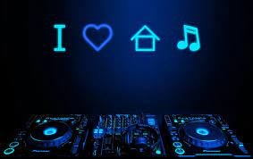

Mustafa Fawzi
Personal information
- full name: Mustafa Fawzi
- address: Street 15, City, Country
- phone number: 123456789
- email address: mustafafawzi@email.com
Hobbies
Football
football, also called association football or soccer, game in which two teams of 11 players, using any part of their bodies except their hands and arms, try to maneuver the ball into the opposing team’s goal. Only the goalkeeper is permitted to handle the ball and may do so only within the penalty area surrounding the goal. The team that scores more goals wins. Football is the world’s most popular ball game in numbers of participants and spectators.
GYM
A gym, short for gymnasium (pl: gymnasiums or gymnasia), is an indoor venue for exercise and sports. The word is derived from the ancient Greek term "gymnasion".[1] They are commonly found in athletic and fitness centers, and as activity and learning spaces in educational institutions. "Gym" is also slang for "fitness centre", which is often an area for indoor recreation. A "gym" may include or describe adjacent open air areas as well. In Western countries, "gyms" often describe places with indoor or outdoor courts for basketball, hockey, tennis, boxing or wrestling, and with equipment and machines used for physical development training, or to do exercises. In many European countries, Gymnasium (and variations of the word) also can describe a secondary school that prepares students for higher education at a university, with or without the presence of athletic courts, fields, or equipment.
Gaming
Gaming is playing an electronic video game, which is often done on a dedicated gaming console, PC or smartphone. People who often play video games are called gamers.
Likes
Favo band

Favo music
Favo movie

Prognose
| vak | web1 | adv prog | IOT | python |
|---|---|---|---|---|
| Mustafa | 16/20 | 15/20 | 15/20 | 18/20 |
| Tim | 10/20 | 10/20 | 10/20 | 10/20 |
| Tom | 10/20 | 10/20 | 10/20 | 10/20 |
| Timo | 10/20 | 10/20 | 10/20 | 10/20 |